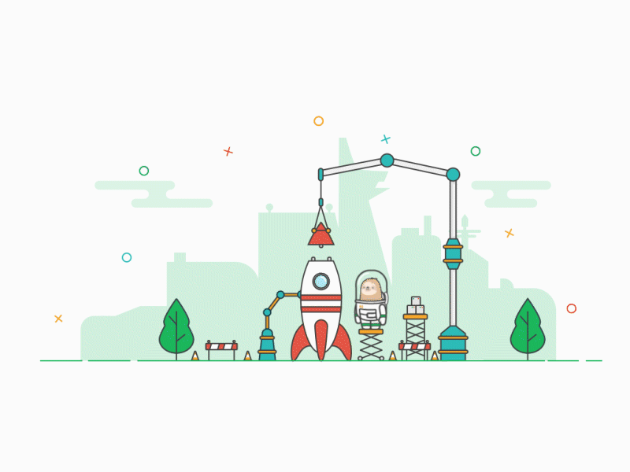

<div *ngIf="!isUnderMaintenance" id="app" class="h-100 app" [ngClass]="settings.theme" [dir]="(settings.rtl) ? 'rtl' : 'ltr'"> 
    <router-outlet *ngIf="isTokenValid"></router-outlet> 
    <ngx-spinner bdColor="rgba(51,51,51,0.7)" size="large" color="#fff" type="ball-clip-rotate"></ngx-spinner>     
</div>
<div style="text-align: center;" *ngIf="isUnderMaintenance"> 
    <h2 class="py-1">System Is Under Maintenance</h2>
    <h5 style="color: lightgray">We are preparing to serve you better</h5>
    
</div>
